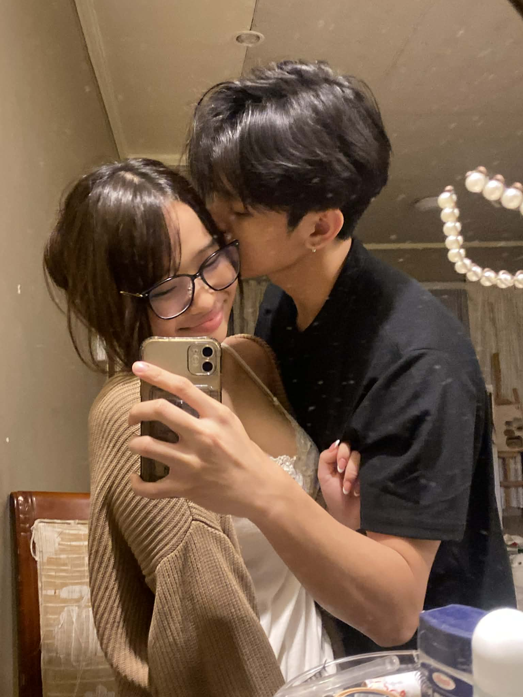
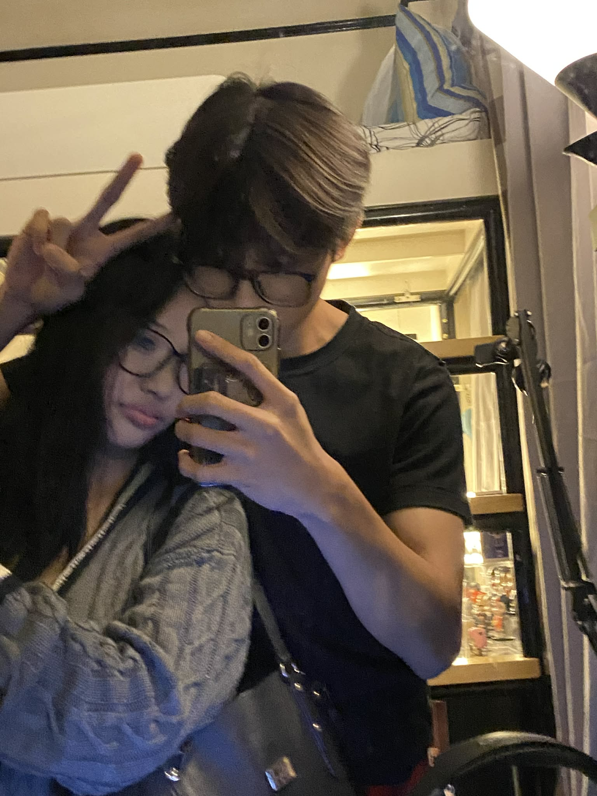

Happy Birthday,
My Egghhead





Happy birthday my baby! This is the first official birthday that im spending with you and im so happy to be here :>> Ive always scorned myself over the fact na I couldnt
be with you when you celebrated ur birthdays, especially when you were at ur lowest in some of them. Well guess what baby! Im here! Im now here just for you my baby :>> WE ARE FINALLY HEREE
WBAWAHAWHWAHHA AFTER 2 EARLY CELEBRATIONS IM FINALLY HERE AT THE MAIN STAGE WITH MY BABYY!!
OKAY OKAY OKAY SO... first thing let me just say HAPPPY HAPPY FRIGGING BRITHDAY TO YOU MY LOVE!!!! I just want you to know there are people out there who genuinely care about you, ones who want to know
what you are up to, what your eating, what ur doing, what ur thinking about, or how ur day went. Theres a handful of us (me included) and I want you to know that you are loved and you are appreciated my baby.
ESPECIALLY TO MEEEEE BTWWW!!!!! To me you are my most prized connection, lover, friend, human. You are everything that love stands for, you are the embodiment of my soulmate and the fact that youre here and im here
alive and healthy celebrating your special dayyyyyyy MAKES ME SO HAPPPYYY! As im writing this, im really really really really super fucken hungry baby HAWBWAHAW so I hopeee well eat lots of good today (big bag activities)
bisag ikaw ang ga bday murag ako may ganahan mo kaon oy WABHHWAAWHHWAHAWH
You have been a blessing to me and many others for 20 whole years, Id have to come up with new words to describe how proud and how happy I am of the woman you've grown to be. You've endured so much, youve gone thru the mud,
youve done the heavy lifting and im so proud to be here todayyy to tell my babyyy that she is an amazing, strong (mmmm), beautiful (mmmmM), kind(MMMMM), did i mention beautiful? (MMMMMMMMM) GIRL TO HAVE GRACED THIS EARTHHHHH!
Im so proud of you baby :>>> I genuinely feel like a dad sometimes and im watching my baby grow up and go to the real world doing her lil adult things UHUHUHUHUHUUHUH
ONNNN a real note, you are officially entering your 20's baby. That is a HUGE mileestone and im so proud of all of ur achievements and grit thus far for u to have reached this far in life. Having ur age start with '2' sounds daunting and scary I know love but I want you to know that you dont have to figure everything out right away. Some people are past their 20's , 30's and they've still yet to dig their paths. Im here for you through all of it okay baby? Im plenty excited and proud of the person you're becoming, I feel lucky to be part of your life. No matter what happens this year, you wont face it alone (you have me baby HEHEEJ)
My love i cant wait to spend our 20's together!! it sounds so exciting growing old with you, we are a step closer to being full fledged adults and living the life weve always talked about :>>>. ANYWAYS, today is ur special dayyyy !!!!! I hope you have a nice day todayy and i hope u enjoy the time we spend together baby ko!!! I LOVE YYOUU AND HAPPY HAPPY HAPPY HAPPY 20TH BIRTHDAY BABY KOOOOOOOOO!!!!!!!! I CANNOT WAIT TO SEE U THIS 16TH AND I CANT WAIT TO CELEBRATE UR BDAY AGAINNN AGCKK I LOVE YOU SO MUCH BABYYY!!!!
++this is future herven, my baby i know your birthday celebration didnt go as planned. it was a sad day and im truly sorry my baby :[, my heart ached so much knowing i hurt you on ur special day, theres no greater guilt I felt than today im so genuinely sorry baby. Im just as disappointed and mad as you are at my self, i cant forgive myself for not only sleeping in but also destroying the mood. I am so sorry baby, i dont wanna make any excuses but I stayed up all night coding this letter, that still doesn't change the fact I slept thru 80% of the day but maybe it will lessen the blow a bit cause i know my baby is hurt ing. I want you to
know you are my number one priority no matter what. Im sorry for the negligence and shortcomings ive displayed baby, i will continue to make up for my actions and the ruined day okay? not just tomorrow but the day after that, next week, and next month. Im truly sorry baby i love you so damn much :[ it was the worst feeling ever seeing you cry my love, it was THE worst im so sorry baby i wanna give u a big hug my poor sweet baby. Ill make it up to you my love i really will. I love you so much my hartyyyyy.
i hope ur bday celebration with ur family will be a blast ;]] Let's play the games we couldnt another time baby im so sorry, ill bawi i love you so much! I hope you have an amazing rest of ur day baby i love you so so so so much! MWA
Herven :DDD